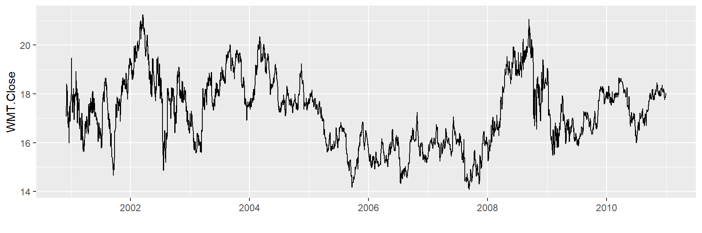
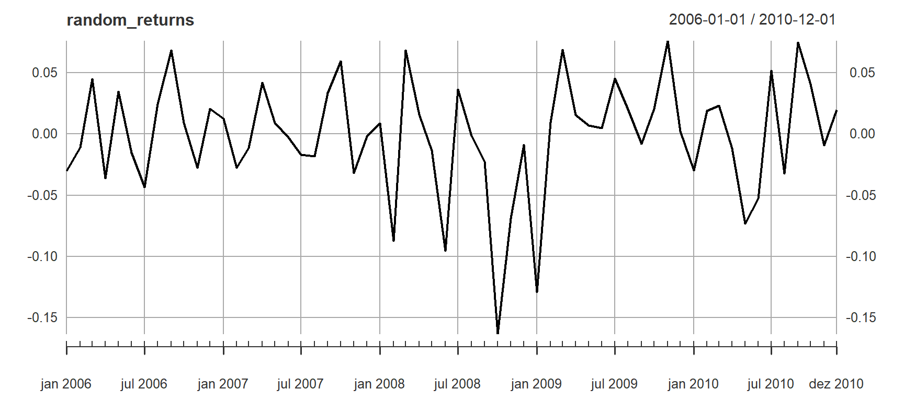
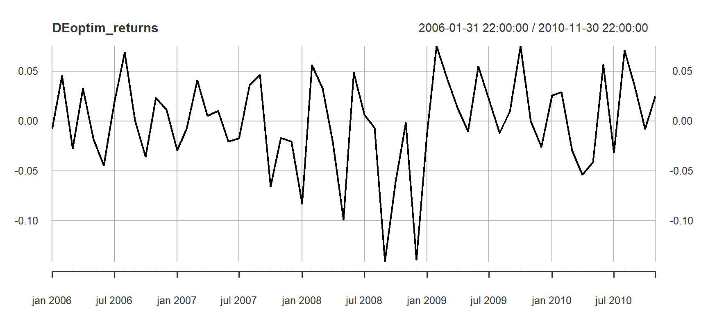

Otimização Multiobjetivo: Alocação de Risco em Portfólio com Evolução Diferencial
Rodrigo Hermont Ozon
Last Update: novembro 08, 2023
start_time <- Sys.time()Otimização Multiobjetivo para uma carteira de ativos e commodities
PhD. Candidature exercise
Modelos de risco médio foram desenvolvidos no início dos anos 50 para o problema de seleção de portfólio. Inicialmente, a variância foi usada como medida de risco. Desde então, muitas medidas alternativas de risco foram propostas. A questão de qual medida de risco é mais apropriada é ainda é objeto de muito debate. Valor em risco (VaR) e o Valor em Risco Condicional (CVaR) são os mais populares modelos de aferição de risco de queda/prejuízos. VaR é o valor negativo do retorno da carteira tal que os retornos ocorrerão apenas com no máximo um nível de probabilidade predefinido, que normalmente é entre um e cinco por cento. CVaR é o valor negativo da média de todas as realizações (períodos) de retorno que estão abaixo do VaR. Existe uma literatura volumosa sobre problemas de otimização de portfólio com medidas de risco VaR e CVaR, veja, por exemplo, Fábián e Veszprémi (2008) e as referências lá no final deste post.
Pacotes do R
library(tidyverse)
library(dplyr)
library(PerformanceAnalytics)
library(PortfolioAnalytics)
library(ROI)
library(quadprog)
library(DEoptim)
library(tsibble)
library(fpp3)
library(plotly)
library(tidyquant)Processamento em paralelo
Este pacote dá capacidade multiprocessamento para o pacote
PortfolioAnalytics.
library(doParallel)
registerDoParallel()Intro
A teoria moderna de seleção de portfólio considera critérios como maximizar a assimetria da cauda superior e liquidez ou minimizar o número de títulos no portfólio. Na literatura recente de portfólio, tem sido defendida por vários autores a necessidade de incorporar contribuições de risco no problema de alocação de carteiras.
A Paridade de Risco de Portfólio de Qian (2005) aloca a variância do portfólio igualmente entre os componentes do portfólio. Maillard et alli (2010) chamam isso de Contribuição de Risco Equivalente da Carteira (ERC). Eles derivam as propriedades teóricas do portfólio ERC e mostram que sua volatilidade está localizada entre aqueles de variância mínima e carteira de pesos idênticos.
Zhu et alli (2010) estudaram a seleção ótima de média-variância do portfólio sob uma restrição direta sobre as contribuições para a variância da carteira. Como o modelo de otimização resultante é um problema de programação quadrática não convexa com restrição quadrática, eles desenvolvem um algoritmo branch-and-bound para resolver isto.
Boudt et alli (2010a) propõem usar as contribuições para o portfólio CVaR como um insumo no problema de otimização de portfólio para criar carteiras cujas contribuições percentuais de CVaR estejam alinhadas com o nível desejado de diversificação de risco de CVaR. Debaixo de suposição de normalidade, o percentual de contribuição CVaR do ativo \(i\) é dado pela seguinte expressão funcional do vetor de pesos \(w = (w_1,. . .,w_d )^{'}\), a média do vetor \(\mu= (\mu_1,. . .,\mu_d)^{'}\) e da matriz de covariância \(\sum\):
\[ \frac{ w_i - [-\mu_i] + \frac{(\sum w)_i}{\sqrt{w^{'}\sum w}\frac{\phi(z_\alpha)}{\alpha}} }{-w^{'}\mu + \sqrt{w^{'}\sum w \frac{\phi (z_\alpha)}{\alpha}}} \]
com \(z_{\alpha}\) o \(\alpha\)-quantil da distribuição normal
padrão e \(\phi(·)\) a função de
densidade normal padrão. Ao longo deste post definimos \(\alpha = 5%\). Como nós mostraremos aqui, o
pacote DEoptim é adequado para resolver esses problemas.
Observe que também é a estratégia de otimização evolutiva usada no
pacote PortfolioAnalytics (Boudt et alli,
2010b)
Para ilustrar isso, considere como um exemplo estilizado uma carteira
de cinco ativos investida em ações com tickers
GE, IBM, JPM, MSFT e WMT. Mantemos a dimensão
do problema em pequena escala para permitir que os leitores consigam
reproduzir em seus computadores pessoais.
Aplicativos de portfólio mais realistas podem ser criados de maneira
direta a partir do código abaixo, expandindo o número de parâmetros
otimizados. Os leitores interessados também podem consultar a vignettes
do pacote DEoptim para um problema de otimização de
portfólio de 100 parâmetros que é típico daqueles encontrados na
prática.
Primeiro baixamos dez anos de dados mensais usando a função
getSymbols do pacote quantmod. Então
calculamos a série de log-retorno e estimadores de matriz de média e
covariância. Para uma visão geral de estimadores alternativos da matriz
de covariância, como outlier robusto ou estimadores
shrinkage , e sua implementação no portfólio alocação,
remetemos o leitor para Würtz et alli (2009, Capítulo 4). Esses
estimadores podem render melhor desempenho no caso de amostras pequenas,
outliers ou desvios da normalidade.
library(quantmod)
GE <- getSymbols("GE",
auto.assign = FALSE,
from = "2000-12-01",
to = "2010-12-31")
IBM <- getSymbols("IBM",
auto.assign = FALSE,
from = "2000-12-01",
to = "2010-12-31")
JPM <- getSymbols("JPM",
auto.assign = FALSE,
from = "2000-12-01",
to = "2010-12-31")
MSFT <- getSymbols("MSFT",
auto.assign = FALSE,
from = "2000-12-01",
to = "2010-12-31")
WMT <- getSymbols("WMT",
auto.assign = FALSE,
from = "2000-12-01",
to = "2010-12-31")
tickers <- cbind(
Cl(GE),
Cl(IBM),
Cl(JPM),
Cl(MSFT),
Cl(WMT)
)
head(tickers) GE.Close IBM.Close JPM.Close MSFT.Close WMT.Close
2000-12-01 306.2511 91.41969 37.3125 28.31250 51.1875
2000-12-04 310.0042 94.04876 37.9375 28.21875 53.8125
2000-12-05 325.0165 98.82887 41.3125 29.93750 55.2500
2000-12-06 323.8906 92.49522 40.0625 28.34375 54.8125
2000-12-07 321.2634 89.02964 39.1875 26.56250 55.0000
2000-12-08 331.3968 92.73422 40.0000 27.21875 54.4375tickers <- fortify(tickers) Veremos os comportamentos dessas séries temporais diárias:
ggplot(tickers, aes(x = Index,
y = GE.Close )) +
geom_line() + xlab("")ggplot(tickers, aes(x = Index,
y = IBM.Close )) +
geom_line() + xlab("")ggplot(tickers, aes(x = Index,
y = JPM.Close )) +
geom_line() + xlab("")ggplot(tickers, aes(x = Index,
y = MSFT.Close )) +
geom_line() + xlab("")ggplot(tickers, aes(x = Index,
y = WMT.Close )) +
geom_line() + xlab("")
Como irei trabalhar com séries mensais, é necessário transformar os dados para capturarmos os últimos valores de fechamentos dos preços de cada mês:
library(tibbletime)
tickers_tidy <- tickers %>%
as_tbl_time(Index) %>%
as_period("monthly", side = "end") %>%
as_tsibble() %>%
mutate(Index = yearmonth(Index))
head(tickers_tidy)Construo as séries de retornos:
retornos <- tickers_tidy %>%
mutate(
GE.Close = log((GE.Close/lag(GE.Close))),
IBM.Close = log((IBM.Close/lag(IBM.Close))),
JPM.Close = log((JPM.Close/lag(JPM.Close))),
MSFT.Close = log((MSFT.Close/lag(MSFT.Close))),
WMT.Close = log((WMT.Close/lag(WMT.Close)))
)
retornos <- retornos[-1,]
head(retornos)Obtenhos os valores dos retornos mensais de cada ativo:
mu <- colMeans(retornos[,-1]) # mu = media dos retornos de cada ativo
mu GE.Close IBM.Close JPM.Close MSFT.Close WMT.Close
-0.0080752176 0.0045461158 -0.0006100575 0.0020841410 0.0001469323 Calculo os devios-padrão mensais dos retornos de cada ativo:
sigma <- cov(retornos[,-1]) # sigma = matriz de covariância dos ativos do portfolio
sigma GE.Close IBM.Close JPM.Close MSFT.Close WMT.Close
GE.Close 0.007908450 0.002970725 0.004320652 0.003424919 0.001122085
IBM.Close 0.002970725 0.006317555 0.003911824 0.003922411 0.001329021
JPM.Close 0.004320652 0.003911824 0.009312091 0.004044448 0.002183116
MSFT.Close 0.003424919 0.003922411 0.004044448 0.006926902 0.001493245
WMT.Close 0.001122085 0.001329021 0.002183116 0.001493245 0.002841469Vamos verificar os comportamentos desses retornos ao longo dos meses:
###########GE.Close#############################
ggplot(tickers_tidy, aes(x = Index,
y = GE.Close )) +
geom_line() + xlab("")ggplot(retornos, aes(x = Index,
y = GE.Close )) +
geom_col() + xlab("") + ylab("GE.Close retornos") + geom_hline(yintercept = 0, color = "red")##########IBM.Close############################
ggplot(tickers_tidy, aes(x = Index,
y = IBM.Close )) +
geom_line() + xlab("")ggplot(retornos, aes(x = Index,
y = IBM.Close )) +
geom_col() + xlab("") + ylab("IBM.Close retornos") + geom_hline(yintercept = 0, color = "red")############JPM.Close############################
ggplot(tickers_tidy, aes(x = Index,
y = JPM.Close )) +
geom_line() + xlab("") ggplot(retornos, aes(x = Index,
y = JPM.Close )) +
geom_col() + xlab("") + geom_hline(yintercept = 0, color = "red") + ylab("JPM.Close retornos") ################MSFT.Close#########################
ggplot(tickers_tidy, aes(x = Index,
y = MSFT.Close )) +
geom_line() + xlab("")ggplot(retornos, aes(x = Index,
y = MSFT.Close )) +
geom_col() + xlab("") + geom_hline(yintercept = 0, color = "red") + ylab("MSFT.Close retornos") ##############WMT.Close##########################
ggplot(tickers_tidy, aes(x = Index,
y = WMT.Close )) +
geom_line() + xlab("")ggplot(retornos, aes(x = Index,
y = WMT.Close )) +
geom_col() + xlab("") + geom_hline(yintercept = 0, color = "red") + ylab("WMT.Close retornos") Primeiro calculamos a carteira de pesos idênticos. Esta é a carteira com maior diversificação de peso e frequentemente utilizada como referência. Mas será que o risco de exposição desta carteira é efetivamente bem diversificado nos diferentes ativos ?
Essa questão pode ser respondida calculando a porcentagem de
contribuições CVaR (Conditional Value-at-Risk) com a
função ES no pacote PerformanceAnalytics.
Essas contribuições percentuais de CVaR indicam quanto cada ativo
contribui para o CVaR total da carteira.
Contribuições percentuais de CVaR:
pContribCVaR <- ES(weights = rep(0.2, 5),
method = "gaussian",
portfolio_method = "component",
mu = mu,
sigma = sigma)$pct_contrib_ES
pContribCVaR <- round(100 * pContribCVaR, 2)
pContribCVaR <- setNames(pContribCVaR, c("GE.Close", "IBM.Close", "JPM.Close", "MSFT.Close", "WMT.Close") )
pContribCVaR GE.Close IBM.Close JPM.Close MSFT.Close WMT.Close
22.99 19.54 26.21 21.43 9.83 Vemos que no portfolio de pesos idênticos, 26,21% do risco CVaR da carteira é causado pelos 20% investimento em MSFT, enquanto o investimento de 20% em WMT causa apenas 9,8% do CVaR total do portfólio. A contribuição de alto risco do MSFT é devido ao seu alto desvio padrão e baixo retorno médio (relatado em por cento):
CVaR nos retornos:
round(100 * mu , 2) # Retornos GE.Close IBM.Close JPM.Close MSFT.Close WMT.Close
-0.81 0.45 -0.06 0.21 0.01 CVaR nos desvios:
round(100 * diag(sigma)^(1/2), 2) # Desvios-padrão GE.Close IBM.Close JPM.Close MSFT.Close WMT.Close
8.89 7.95 9.65 8.32 5.33 Agora usamos a função DEoptim do pacote
DEoptim para encontrar os pesos do portfolio para os quais
a carteira tem o menor CVaR e como cada investimento pode contribuir
com, no máximo, 22,5% para o risco CVaR total da carteira.
Para isso, primeiro definimos nossa função objetivo para minimizar.
A implementação atual do DEoptim permite restrições no
espaço de domínio. Para incluir as restrições de orçamento de risco, nós
as adicionamos a função objetivo por meio de uma função de penalidade.
Deste modo, permitimos que o algoritmo de busca considere soluções
inviáveis. Um portfólio que é inaceitável pois o investidor deve ser
penalizado o suficiente para ser rejeitado pelo processo de minimização
e quanto maior o violação da restrição, quanto maior for o aumento o
valor da função objetivo.
Uma expressão padrão dessas violações é \(\alpha × |violation|^p\). Crama e Schyns (2003) descrevem várias maneiras de calibrar os fatores de escala \(\alpha\) e \(p\). Se esses valores forem muito pequenos, então as penalidades não cumprem o papel esperado e a solução final pode ser inviável. Por outro lado, se \(\alpha\) e \(p\) forem muito grandes, então o prazo do CVaR torna-se insignificante em relação à penalidade; assim, pequenas variações de \(w\) podem levar a grandes variações do prazo de penalidade, que mascaram o efeito sobre o portfólio CVaR.
Definimos \(\alpha = 103\) e \(p = 1\), mas reconhecemos que melhores escolhas podem ser possíveis e dependem do problema em questão.
Definição da Função Objetivo:
obj <- function(w){
if (sum(w) == 0) { w <- w + 1e-2 }
w <- w / sum(w)
CVaR <- ES(weights = w,
method = "gaussian",
portfolio_method = "component",
mu = mu,
sigma = sigma)
tmp1 <- CVaR$ES
tmp2 <- max(CVaR$pct_contrib_ES - 0.225, 0)
out <- tmp1 + 1e3 * tmp2
}A penalidade introduzida na função objetivo é não diferenciável e,
portanto, rotinas padrão de otimização baseadas em gradiente não podem
ser usadas. Em contraste, o DEoptim foi projetado para
encontrar uma boa aproximação para o mínimo global do problema de
otimização:
set.seed(1234)
out <- DEoptim(fn = obj,
lower = rep(0, 5),
upper = rep(1, 5))Iteration: 1 bestvalit: 0.116819 bestmemit: 0.507307 0.544270 0.423047 0.452200 0.807648
Iteration: 2 bestvalit: 0.116819 bestmemit: 0.507307 0.544270 0.423047 0.452200 0.807648
Iteration: 3 bestvalit: 0.116819 bestmemit: 0.507307 0.544270 0.423047 0.452200 0.807648
Iteration: 4 bestvalit: 0.116819 bestmemit: 0.507307 0.544270 0.423047 0.452200 0.807648
Iteration: 5 bestvalit: 0.116819 bestmemit: 0.507307 0.544270 0.423047 0.452200 0.807648
Iteration: 6 bestvalit: 0.114037 bestmemit: 0.507307 0.544270 0.423047 0.452200 0.984624
Iteration: 7 bestvalit: 0.114037 bestmemit: 0.507307 0.544270 0.423047 0.452200 0.984624
Iteration: 8 bestvalit: 0.114037 bestmemit: 0.507307 0.544270 0.423047 0.452200 0.984624
Iteration: 9 bestvalit: 0.113715 bestmemit: 0.507307 0.544270 0.423047 0.383827 0.984624
Iteration: 10 bestvalit: 0.113715 bestmemit: 0.507307 0.544270 0.423047 0.383827 0.984624
Iteration: 11 bestvalit: 0.113715 bestmemit: 0.507307 0.544270 0.423047 0.383827 0.984624
Iteration: 12 bestvalit: 0.113715 bestmemit: 0.507307 0.544270 0.423047 0.383827 0.984624
Iteration: 13 bestvalit: 0.113715 bestmemit: 0.507307 0.544270 0.423047 0.383827 0.984624
Iteration: 14 bestvalit: 0.113715 bestmemit: 0.507307 0.544270 0.423047 0.383827 0.984624
Iteration: 15 bestvalit: 0.113715 bestmemit: 0.507307 0.544270 0.423047 0.383827 0.984624
Iteration: 16 bestvalit: 0.113715 bestmemit: 0.507307 0.544270 0.423047 0.383827 0.984624
Iteration: 17 bestvalit: 0.113715 bestmemit: 0.507307 0.544270 0.423047 0.383827 0.984624
Iteration: 18 bestvalit: 0.113715 bestmemit: 0.507307 0.544270 0.423047 0.383827 0.984624
Iteration: 19 bestvalit: 0.113715 bestmemit: 0.507307 0.544270 0.423047 0.383827 0.984624
Iteration: 20 bestvalit: 0.113715 bestmemit: 0.507307 0.544270 0.423047 0.383827 0.984624
Iteration: 21 bestvalit: 0.113530 bestmemit: 0.502320 0.591949 0.402257 0.415443 0.990805
Iteration: 22 bestvalit: 0.113530 bestmemit: 0.502320 0.591949 0.402257 0.415443 0.990805
Iteration: 23 bestvalit: 0.113530 bestmemit: 0.502320 0.591949 0.402257 0.415443 0.990805
Iteration: 24 bestvalit: 0.113530 bestmemit: 0.502320 0.591949 0.402257 0.415443 0.990805
Iteration: 25 bestvalit: 0.113152 bestmemit: 0.510265 0.557241 0.311824 0.531627 0.972806
Iteration: 26 bestvalit: 0.112845 bestmemit: 0.473784 0.557241 0.311824 0.531627 0.972806
Iteration: 27 bestvalit: 0.112845 bestmemit: 0.473784 0.557241 0.311824 0.531627 0.972806
Iteration: 28 bestvalit: 0.112845 bestmemit: 0.473784 0.557241 0.311824 0.531627 0.972806
Iteration: 29 bestvalit: 0.112845 bestmemit: 0.473784 0.557241 0.311824 0.531627 0.972806
Iteration: 30 bestvalit: 0.112845 bestmemit: 0.473784 0.557241 0.311824 0.531627 0.972806
Iteration: 31 bestvalit: 0.112845 bestmemit: 0.473784 0.557241 0.311824 0.531627 0.972806
Iteration: 32 bestvalit: 0.112845 bestmemit: 0.473784 0.557241 0.311824 0.531627 0.972806
Iteration: 33 bestvalit: 0.112845 bestmemit: 0.473784 0.557241 0.311824 0.531627 0.972806
Iteration: 34 bestvalit: 0.112845 bestmemit: 0.473784 0.557241 0.311824 0.531627 0.972806
Iteration: 35 bestvalit: 0.112845 bestmemit: 0.473784 0.557241 0.311824 0.531627 0.972806
Iteration: 36 bestvalit: 0.112845 bestmemit: 0.473784 0.557241 0.311824 0.531627 0.972806
Iteration: 37 bestvalit: 0.112845 bestmemit: 0.473784 0.557241 0.311824 0.531627 0.972806
Iteration: 38 bestvalit: 0.112748 bestmemit: 0.473784 0.524077 0.311824 0.531627 0.972806
Iteration: 39 bestvalit: 0.112748 bestmemit: 0.473784 0.524077 0.311824 0.531627 0.972806
Iteration: 40 bestvalit: 0.112748 bestmemit: 0.473784 0.524077 0.311824 0.531627 0.972806
Iteration: 41 bestvalit: 0.112748 bestmemit: 0.473784 0.524077 0.311824 0.531627 0.972806
Iteration: 42 bestvalit: 0.112748 bestmemit: 0.473784 0.524077 0.311824 0.531627 0.972806
Iteration: 43 bestvalit: 0.112748 bestmemit: 0.473784 0.524077 0.311824 0.531627 0.972806
Iteration: 44 bestvalit: 0.112748 bestmemit: 0.473784 0.524077 0.311824 0.531627 0.972806
Iteration: 45 bestvalit: 0.112748 bestmemit: 0.473784 0.524077 0.311824 0.531627 0.972806
Iteration: 46 bestvalit: 0.112748 bestmemit: 0.473784 0.524077 0.311824 0.531627 0.972806
Iteration: 47 bestvalit: 0.112748 bestmemit: 0.473784 0.524077 0.311824 0.531627 0.972806
Iteration: 48 bestvalit: 0.112748 bestmemit: 0.473784 0.524077 0.311824 0.531627 0.972806
Iteration: 49 bestvalit: 0.112692 bestmemit: 0.465191 0.559415 0.298957 0.533445 0.967692
Iteration: 50 bestvalit: 0.112692 bestmemit: 0.465191 0.559415 0.298957 0.533445 0.967692
Iteration: 51 bestvalit: 0.112692 bestmemit: 0.465191 0.559415 0.298957 0.533445 0.967692
Iteration: 52 bestvalit: 0.112692 bestmemit: 0.465191 0.559415 0.298957 0.533445 0.967692
Iteration: 53 bestvalit: 0.112692 bestmemit: 0.465191 0.559415 0.298957 0.533445 0.967692
Iteration: 54 bestvalit: 0.112692 bestmemit: 0.465191 0.559415 0.298957 0.533445 0.967692
Iteration: 55 bestvalit: 0.112692 bestmemit: 0.465191 0.559415 0.298957 0.533445 0.967692
Iteration: 56 bestvalit: 0.112630 bestmemit: 0.532983 0.597617 0.280691 0.513050 0.995445
Iteration: 57 bestvalit: 0.112630 bestmemit: 0.532983 0.597617 0.280691 0.513050 0.995445
Iteration: 58 bestvalit: 0.112627 bestmemit: 0.465191 0.559415 0.298957 0.533445 0.972284
Iteration: 59 bestvalit: 0.112627 bestmemit: 0.465191 0.559415 0.298957 0.533445 0.972284
Iteration: 60 bestvalit: 0.112627 bestmemit: 0.465191 0.559415 0.298957 0.533445 0.972284
Iteration: 61 bestvalit: 0.112627 bestmemit: 0.465191 0.559415 0.298957 0.533445 0.972284
Iteration: 62 bestvalit: 0.112627 bestmemit: 0.465191 0.559415 0.298957 0.533445 0.972284
Iteration: 63 bestvalit: 0.112454 bestmemit: 0.465191 0.559415 0.286157 0.533445 0.972284
Iteration: 64 bestvalit: 0.112454 bestmemit: 0.465191 0.559415 0.286157 0.533445 0.972284
Iteration: 65 bestvalit: 0.112454 bestmemit: 0.465191 0.559415 0.286157 0.533445 0.972284
Iteration: 66 bestvalit: 0.112440 bestmemit: 0.465191 0.559415 0.286157 0.533445 0.973311
Iteration: 67 bestvalit: 0.112440 bestmemit: 0.465191 0.559415 0.286157 0.533445 0.973311
Iteration: 68 bestvalit: 0.112440 bestmemit: 0.465191 0.559415 0.286157 0.533445 0.973311
Iteration: 69 bestvalit: 0.112440 bestmemit: 0.465191 0.559415 0.286157 0.533445 0.973311
Iteration: 70 bestvalit: 0.112440 bestmemit: 0.465191 0.559415 0.286157 0.533445 0.973311
Iteration: 71 bestvalit: 0.112440 bestmemit: 0.465191 0.559415 0.286157 0.533445 0.973311
Iteration: 72 bestvalit: 0.112440 bestmemit: 0.465191 0.559415 0.286157 0.533445 0.973311
Iteration: 73 bestvalit: 0.112440 bestmemit: 0.465191 0.559415 0.286157 0.533445 0.973311
Iteration: 74 bestvalit: 0.112440 bestmemit: 0.465191 0.559415 0.286157 0.533445 0.973311
Iteration: 75 bestvalit: 0.112440 bestmemit: 0.465191 0.559415 0.286157 0.533445 0.973311
Iteration: 76 bestvalit: 0.112440 bestmemit: 0.465191 0.559415 0.286157 0.533445 0.973311
Iteration: 77 bestvalit: 0.112440 bestmemit: 0.465191 0.559415 0.286157 0.533445 0.973311
Iteration: 78 bestvalit: 0.112440 bestmemit: 0.465191 0.559415 0.286157 0.533445 0.973311
Iteration: 79 bestvalit: 0.112440 bestmemit: 0.465191 0.559415 0.286157 0.533445 0.973311
Iteration: 80 bestvalit: 0.112440 bestmemit: 0.465191 0.559415 0.286157 0.533445 0.973311
Iteration: 81 bestvalit: 0.112401 bestmemit: 0.528886 0.587142 0.253780 0.543166 0.997550
Iteration: 82 bestvalit: 0.112401 bestmemit: 0.528886 0.587142 0.253780 0.543166 0.997550
Iteration: 83 bestvalit: 0.112401 bestmemit: 0.528886 0.587142 0.253780 0.543166 0.997550
Iteration: 84 bestvalit: 0.112401 bestmemit: 0.528886 0.587142 0.253780 0.543166 0.997550
Iteration: 85 bestvalit: 0.112401 bestmemit: 0.528886 0.587142 0.253780 0.543166 0.997550
Iteration: 86 bestvalit: 0.112401 bestmemit: 0.528886 0.587142 0.253780 0.543166 0.997550
Iteration: 87 bestvalit: 0.112401 bestmemit: 0.528886 0.587142 0.253780 0.543166 0.997550
Iteration: 88 bestvalit: 0.112401 bestmemit: 0.528886 0.587142 0.253780 0.543166 0.997550
Iteration: 89 bestvalit: 0.112401 bestmemit: 0.528886 0.587142 0.253780 0.543166 0.997550
Iteration: 90 bestvalit: 0.112401 bestmemit: 0.528886 0.587142 0.253780 0.543166 0.997550
Iteration: 91 bestvalit: 0.112401 bestmemit: 0.528886 0.587142 0.253780 0.543166 0.997550
Iteration: 92 bestvalit: 0.112348 bestmemit: 0.522917 0.587142 0.253780 0.543166 0.997550
Iteration: 93 bestvalit: 0.112348 bestmemit: 0.522917 0.587142 0.253780 0.543166 0.997550
Iteration: 94 bestvalit: 0.112348 bestmemit: 0.522917 0.587142 0.253780 0.543166 0.997550
Iteration: 95 bestvalit: 0.112348 bestmemit: 0.522917 0.587142 0.253780 0.543166 0.997550
Iteration: 96 bestvalit: 0.112348 bestmemit: 0.522917 0.587142 0.253780 0.543166 0.997550
Iteration: 97 bestvalit: 0.112348 bestmemit: 0.522917 0.587142 0.253780 0.543166 0.997550
Iteration: 98 bestvalit: 0.112298 bestmemit: 0.522917 0.587142 0.253780 0.527480 0.993003
Iteration: 99 bestvalit: 0.112298 bestmemit: 0.522917 0.587142 0.253780 0.527480 0.993003
Iteration: 100 bestvalit: 0.112298 bestmemit: 0.522917 0.587142 0.253780 0.527480 0.993003
Iteration: 101 bestvalit: 0.112189 bestmemit: 0.516466 0.584172 0.252668 0.529010 0.995788
Iteration: 102 bestvalit: 0.112189 bestmemit: 0.516466 0.584172 0.252668 0.529010 0.995788
Iteration: 103 bestvalit: 0.112189 bestmemit: 0.516466 0.584172 0.252668 0.529010 0.995788
Iteration: 104 bestvalit: 0.112189 bestmemit: 0.516466 0.584172 0.252668 0.529010 0.995788
Iteration: 105 bestvalit: 0.112189 bestmemit: 0.516466 0.584172 0.252668 0.529010 0.995788
Iteration: 106 bestvalit: 0.112189 bestmemit: 0.516466 0.584172 0.252668 0.529010 0.995788
Iteration: 107 bestvalit: 0.112113 bestmemit: 0.522917 0.587142 0.238810 0.527480 0.993003
Iteration: 108 bestvalit: 0.112113 bestmemit: 0.522917 0.587142 0.238810 0.527480 0.993003
Iteration: 109 bestvalit: 0.112113 bestmemit: 0.522917 0.587142 0.238810 0.527480 0.993003
Iteration: 110 bestvalit: 0.112113 bestmemit: 0.522917 0.587142 0.238810 0.527480 0.993003
Iteration: 111 bestvalit: 0.112113 bestmemit: 0.522917 0.587142 0.238810 0.527480 0.993003
Iteration: 112 bestvalit: 0.112113 bestmemit: 0.522917 0.587142 0.238810 0.527480 0.993003
Iteration: 113 bestvalit: 0.112113 bestmemit: 0.522917 0.587142 0.238810 0.527480 0.993003
Iteration: 114 bestvalit: 0.112113 bestmemit: 0.522917 0.587142 0.238810 0.527480 0.993003
Iteration: 115 bestvalit: 0.112113 bestmemit: 0.522917 0.587142 0.238810 0.527480 0.993003
Iteration: 116 bestvalit: 0.112113 bestmemit: 0.522917 0.587142 0.238810 0.527480 0.993003
Iteration: 117 bestvalit: 0.112113 bestmemit: 0.522917 0.587142 0.238810 0.527480 0.993003
Iteration: 118 bestvalit: 0.112113 bestmemit: 0.522917 0.587142 0.238810 0.527480 0.993003
Iteration: 119 bestvalit: 0.112113 bestmemit: 0.522917 0.587142 0.238810 0.527480 0.993003
Iteration: 120 bestvalit: 0.112113 bestmemit: 0.522917 0.587142 0.238810 0.527480 0.993003
Iteration: 121 bestvalit: 0.112080 bestmemit: 0.522917 0.587142 0.238810 0.527480 0.995408
Iteration: 122 bestvalit: 0.112080 bestmemit: 0.522917 0.587142 0.238810 0.527480 0.995408
Iteration: 123 bestvalit: 0.112080 bestmemit: 0.522917 0.587142 0.238810 0.527480 0.995408
Iteration: 124 bestvalit: 0.112080 bestmemit: 0.522917 0.587142 0.238810 0.527480 0.995408
Iteration: 125 bestvalit: 0.112080 bestmemit: 0.522917 0.587142 0.238810 0.527480 0.995408
Iteration: 126 bestvalit: 0.112080 bestmemit: 0.522917 0.587142 0.238810 0.527480 0.995408
Iteration: 127 bestvalit: 0.112080 bestmemit: 0.522917 0.587142 0.238810 0.527480 0.995408
Iteration: 128 bestvalit: 0.112080 bestmemit: 0.522917 0.587142 0.238810 0.527480 0.995408
Iteration: 129 bestvalit: 0.112080 bestmemit: 0.522917 0.587142 0.238810 0.527480 0.995408
Iteration: 130 bestvalit: 0.112080 bestmemit: 0.522917 0.587142 0.238810 0.527480 0.995408
Iteration: 131 bestvalit: 0.112080 bestmemit: 0.522917 0.587142 0.238810 0.527480 0.995408
Iteration: 132 bestvalit: 0.112080 bestmemit: 0.522917 0.587142 0.238810 0.527480 0.995408
Iteration: 133 bestvalit: 0.112080 bestmemit: 0.522917 0.587142 0.238810 0.527480 0.995408
Iteration: 134 bestvalit: 0.112080 bestmemit: 0.522917 0.587142 0.238810 0.527480 0.995408
Iteration: 135 bestvalit: 0.112080 bestmemit: 0.522917 0.587142 0.238810 0.527480 0.995408
Iteration: 136 bestvalit: 0.112080 bestmemit: 0.522917 0.587142 0.238810 0.527480 0.995408
Iteration: 137 bestvalit: 0.112080 bestmemit: 0.522917 0.587142 0.238810 0.527480 0.995408
Iteration: 138 bestvalit: 0.112080 bestmemit: 0.522917 0.587142 0.238810 0.527480 0.995408
Iteration: 139 bestvalit: 0.112080 bestmemit: 0.522917 0.587142 0.238810 0.527480 0.995408
Iteration: 140 bestvalit: 0.112080 bestmemit: 0.522917 0.587142 0.238810 0.527480 0.995408
Iteration: 141 bestvalit: 0.112080 bestmemit: 0.522917 0.587142 0.238810 0.527480 0.995408
Iteration: 142 bestvalit: 0.112080 bestmemit: 0.522917 0.587142 0.238810 0.527480 0.995408
Iteration: 143 bestvalit: 0.112080 bestmemit: 0.522917 0.587142 0.238810 0.527480 0.995408
Iteration: 144 bestvalit: 0.112080 bestmemit: 0.522917 0.587142 0.238810 0.527480 0.995408
Iteration: 145 bestvalit: 0.112080 bestmemit: 0.522917 0.587142 0.238810 0.527480 0.995408
Iteration: 146 bestvalit: 0.112080 bestmemit: 0.522917 0.587142 0.238810 0.527480 0.995408
Iteration: 147 bestvalit: 0.112080 bestmemit: 0.522917 0.587142 0.238810 0.527480 0.995408
Iteration: 148 bestvalit: 0.112080 bestmemit: 0.522917 0.587142 0.238810 0.527480 0.995408
Iteration: 149 bestvalit: 0.112080 bestmemit: 0.522917 0.587142 0.238810 0.527480 0.995408
Iteration: 150 bestvalit: 0.112080 bestmemit: 0.522917 0.587142 0.238810 0.527480 0.995408
Iteration: 151 bestvalit: 0.112080 bestmemit: 0.522917 0.587142 0.238810 0.527480 0.995408
Iteration: 152 bestvalit: 0.112080 bestmemit: 0.522917 0.587142 0.238810 0.527480 0.995408
Iteration: 153 bestvalit: 0.112080 bestmemit: 0.522917 0.587142 0.238810 0.527480 0.995408
Iteration: 154 bestvalit: 0.112080 bestmemit: 0.522917 0.587142 0.238810 0.527480 0.995408
Iteration: 155 bestvalit: 0.112080 bestmemit: 0.522917 0.587142 0.238810 0.527480 0.995408
Iteration: 156 bestvalit: 0.112080 bestmemit: 0.522917 0.587142 0.238810 0.527480 0.995408
Iteration: 157 bestvalit: 0.112080 bestmemit: 0.522917 0.587142 0.238810 0.527480 0.995408
Iteration: 158 bestvalit: 0.112080 bestmemit: 0.522917 0.587142 0.238810 0.527480 0.995408
Iteration: 159 bestvalit: 0.112080 bestmemit: 0.522917 0.587142 0.238810 0.527480 0.995408
Iteration: 160 bestvalit: 0.112080 bestmemit: 0.522917 0.587142 0.238810 0.527480 0.995408
Iteration: 161 bestvalit: 0.112080 bestmemit: 0.522917 0.587142 0.238810 0.527480 0.995408
Iteration: 162 bestvalit: 0.112080 bestmemit: 0.522917 0.587142 0.238810 0.527480 0.995408
Iteration: 163 bestvalit: 0.112080 bestmemit: 0.522917 0.587142 0.238810 0.527480 0.995408
Iteration: 164 bestvalit: 0.112080 bestmemit: 0.522917 0.587142 0.238810 0.527480 0.995408
Iteration: 165 bestvalit: 0.112080 bestmemit: 0.522917 0.587142 0.238810 0.527480 0.995408
Iteration: 166 bestvalit: 0.112080 bestmemit: 0.522917 0.587142 0.238810 0.527480 0.995408
Iteration: 167 bestvalit: 0.112080 bestmemit: 0.522917 0.587142 0.238810 0.527480 0.995408
Iteration: 168 bestvalit: 0.112080 bestmemit: 0.522917 0.587142 0.238810 0.527480 0.995408
Iteration: 169 bestvalit: 0.112080 bestmemit: 0.522917 0.587142 0.238810 0.527480 0.995408
Iteration: 170 bestvalit: 0.112080 bestmemit: 0.522917 0.587142 0.238810 0.527480 0.995408
Iteration: 171 bestvalit: 0.112080 bestmemit: 0.522917 0.587142 0.238810 0.527480 0.995408
Iteration: 172 bestvalit: 0.112080 bestmemit: 0.522917 0.587142 0.238810 0.527480 0.995408
Iteration: 173 bestvalit: 0.112080 bestmemit: 0.522917 0.587142 0.238810 0.527480 0.995408
Iteration: 174 bestvalit: 0.112080 bestmemit: 0.522917 0.587142 0.238810 0.527480 0.995408
Iteration: 175 bestvalit: 0.112080 bestmemit: 0.522917 0.587142 0.238810 0.527480 0.995408
Iteration: 176 bestvalit: 0.112080 bestmemit: 0.522917 0.587142 0.238810 0.527480 0.995408
Iteration: 177 bestvalit: 0.112080 bestmemit: 0.522917 0.587142 0.238810 0.527480 0.995408
Iteration: 178 bestvalit: 0.112080 bestmemit: 0.522917 0.587142 0.238810 0.527480 0.995408
Iteration: 179 bestvalit: 0.112080 bestmemit: 0.522917 0.587142 0.238810 0.527480 0.995408
Iteration: 180 bestvalit: 0.112080 bestmemit: 0.522917 0.587142 0.238810 0.527480 0.995408
Iteration: 181 bestvalit: 0.112080 bestmemit: 0.522917 0.587142 0.238810 0.527480 0.995408
Iteration: 182 bestvalit: 0.112080 bestmemit: 0.522917 0.587142 0.238810 0.527480 0.995408
Iteration: 183 bestvalit: 0.112080 bestmemit: 0.522917 0.587142 0.238810 0.527480 0.995408
Iteration: 184 bestvalit: 0.112080 bestmemit: 0.522917 0.587142 0.238810 0.527480 0.995408
Iteration: 185 bestvalit: 0.112080 bestmemit: 0.522917 0.587142 0.238810 0.527480 0.995408
Iteration: 186 bestvalit: 0.112080 bestmemit: 0.522917 0.587142 0.238810 0.527480 0.995408
Iteration: 187 bestvalit: 0.112080 bestmemit: 0.522917 0.587142 0.238810 0.527480 0.995408
Iteration: 188 bestvalit: 0.112080 bestmemit: 0.522917 0.587142 0.238810 0.527480 0.995408
Iteration: 189 bestvalit: 0.112080 bestmemit: 0.522917 0.587142 0.238810 0.527480 0.995408
Iteration: 190 bestvalit: 0.112080 bestmemit: 0.522917 0.587142 0.238810 0.527480 0.995408
Iteration: 191 bestvalit: 0.112080 bestmemit: 0.522917 0.587142 0.238810 0.527480 0.995408
Iteration: 192 bestvalit: 0.112080 bestmemit: 0.522917 0.587142 0.238810 0.527480 0.995408
Iteration: 193 bestvalit: 0.112080 bestmemit: 0.522917 0.587142 0.238810 0.527480 0.995408
Iteration: 194 bestvalit: 0.112080 bestmemit: 0.522917 0.587142 0.238810 0.527480 0.995408
Iteration: 195 bestvalit: 0.112080 bestmemit: 0.522917 0.587142 0.238810 0.527480 0.995408
Iteration: 196 bestvalit: 0.112080 bestmemit: 0.522917 0.587142 0.238810 0.527480 0.995408
Iteration: 197 bestvalit: 0.112080 bestmemit: 0.522917 0.587142 0.238810 0.527480 0.995408
Iteration: 198 bestvalit: 0.112080 bestmemit: 0.522917 0.587142 0.238810 0.527480 0.995408
Iteration: 199 bestvalit: 0.112080 bestmemit: 0.522917 0.587142 0.238810 0.527480 0.995408
Iteration: 200 bestvalit: 0.112080 bestmemit: 0.522917 0.587142 0.238810 0.527480 0.995408out$optim$bestval[1] 0.1120799wstar <- out$optim$bestmem
wstar <- wstar / sum(wstar)
setNames(round(100 * wstar, 2), c("GE.Close", "IBM.Close", "JPM.Close", "MSFT.Close", "WMT.Close") ) GE.Close IBM.Close JPM.Close MSFT.Close WMT.Close
18.21 20.45 8.32 18.37 34.66 100 * (sum(wstar * mu) - mean(mu))[1] 0.02236845Observe que as principais diferenças com a carteira de pesos
idênticos são os baixos pesos dados ao JPM e MSFT e o alto peso para
WMT. Como pode ser visto das duas últimas linhas dos comandos acima,
esta carteira de risco mínimo tem um retorno esperado maior do que o
mesmo peso portfólio. O código a seguir ilustra que o
DEoptim produz resultados superiores do que o baseado em
rotinas de gradiente de otimização disponíveis no R.
out <- optim(par = rep(0.2, 5),
fn = obj,
method = "L-BFGS-B",
lower = rep(0, 5),
upper = rep(1, 5))
out$value[1] 0.1224446out <- nlminb(start = rep(0.2, 5),
objective = obj,
lower = rep(0, 5),
upper = rep(1, 5))
out$objective[1] 0.1137513Mesmo neste exemplo estilizado relativamente simples, as rotinas
optim e nlminb convergiram para mínimo
local.
Suponha agora que o investidor esteja interessado na carteira de risco mais diversificado cujo retorno esperado é maior do que a carteira de pesos iguais. Isto equivale a minimizar a maior contribuição CVaR sujeita a uma meta de retorno e pode ser implementada da seguinte forma:
obj <- function(w) {
if(sum(w) == 0) { w <- w + 1e-2 }
w <- w / sum(w)
contribCVaR <- ES(weights = w,
method = "gaussian",
portfolio_method = "component",
mu = mu,
sigma = sigma)$contribution
tmp1 <- max(contribCVaR)
tmp2 <- max(mean(mu) - sum(w * mu), 0)
out <- tmp1 + 1e3 * tmp2
}
set.seed(1234)
out <- DEoptim(fn = obj,
lower = rep(0, 5),
upper = rep(1, 5))Iteration: 1 bestvalit: 0.025319 bestmemit: 0.507307 0.544270 0.423047 0.534891 0.807648
Iteration: 2 bestvalit: 0.025319 bestmemit: 0.507307 0.544270 0.423047 0.534891 0.807648
Iteration: 3 bestvalit: 0.025319 bestmemit: 0.507307 0.544270 0.423047 0.534891 0.807648
Iteration: 4 bestvalit: 0.025319 bestmemit: 0.507307 0.544270 0.423047 0.534891 0.807648
Iteration: 5 bestvalit: 0.025319 bestmemit: 0.507307 0.544270 0.423047 0.534891 0.807648
Iteration: 6 bestvalit: 0.023721 bestmemit: 0.507307 0.544270 0.423047 0.534891 0.984624
Iteration: 7 bestvalit: 0.023721 bestmemit: 0.507307 0.544270 0.423047 0.534891 0.984624
Iteration: 8 bestvalit: 0.023721 bestmemit: 0.507307 0.544270 0.423047 0.534891 0.984624
Iteration: 9 bestvalit: 0.023721 bestmemit: 0.507307 0.544270 0.423047 0.534891 0.984624
Iteration: 10 bestvalit: 0.023721 bestmemit: 0.507307 0.544270 0.423047 0.534891 0.984624
Iteration: 11 bestvalit: 0.023721 bestmemit: 0.507307 0.544270 0.423047 0.534891 0.984624
Iteration: 12 bestvalit: 0.023721 bestmemit: 0.507307 0.544270 0.423047 0.534891 0.984624
Iteration: 13 bestvalit: 0.023721 bestmemit: 0.507307 0.544270 0.423047 0.534891 0.984624
Iteration: 14 bestvalit: 0.023721 bestmemit: 0.507307 0.544270 0.423047 0.534891 0.984624
Iteration: 15 bestvalit: 0.023635 bestmemit: 0.507307 0.544270 0.423047 0.534891 0.973496
Iteration: 16 bestvalit: 0.023635 bestmemit: 0.507307 0.544270 0.423047 0.534891 0.973496
Iteration: 17 bestvalit: 0.023635 bestmemit: 0.507307 0.544270 0.423047 0.534891 0.973496
Iteration: 18 bestvalit: 0.023635 bestmemit: 0.507307 0.544270 0.423047 0.534891 0.973496
Iteration: 19 bestvalit: 0.023635 bestmemit: 0.507307 0.544270 0.423047 0.534891 0.973496
Iteration: 20 bestvalit: 0.023635 bestmemit: 0.507307 0.544270 0.423047 0.534891 0.973496
Iteration: 21 bestvalit: 0.023635 bestmemit: 0.507307 0.544270 0.423047 0.534891 0.973496
Iteration: 22 bestvalit: 0.023635 bestmemit: 0.507307 0.544270 0.423047 0.534891 0.973496
Iteration: 23 bestvalit: 0.023635 bestmemit: 0.507307 0.544270 0.423047 0.534891 0.973496
Iteration: 24 bestvalit: 0.023635 bestmemit: 0.507307 0.544270 0.423047 0.534891 0.973496
Iteration: 25 bestvalit: 0.023635 bestmemit: 0.507307 0.544270 0.423047 0.534891 0.973496
Iteration: 26 bestvalit: 0.023635 bestmemit: 0.507307 0.544270 0.423047 0.534891 0.973496
Iteration: 27 bestvalit: 0.023635 bestmemit: 0.507307 0.544270 0.423047 0.534891 0.973496
Iteration: 28 bestvalit: 0.023635 bestmemit: 0.507307 0.544270 0.423047 0.534891 0.973496
Iteration: 29 bestvalit: 0.023635 bestmemit: 0.507307 0.544270 0.423047 0.534891 0.973496
Iteration: 30 bestvalit: 0.023635 bestmemit: 0.507307 0.544270 0.423047 0.534891 0.973496
Iteration: 31 bestvalit: 0.023635 bestmemit: 0.507307 0.544270 0.423047 0.534891 0.973496
Iteration: 32 bestvalit: 0.023635 bestmemit: 0.507307 0.544270 0.423047 0.534891 0.973496
Iteration: 33 bestvalit: 0.023634 bestmemit: 0.521148 0.565140 0.445867 0.534438 0.972450
Iteration: 34 bestvalit: 0.023634 bestmemit: 0.521148 0.565140 0.445867 0.534438 0.972450
Iteration: 35 bestvalit: 0.023634 bestmemit: 0.521148 0.565140 0.445867 0.534438 0.972450
Iteration: 36 bestvalit: 0.023634 bestmemit: 0.521148 0.565140 0.445867 0.534438 0.972450
Iteration: 37 bestvalit: 0.023634 bestmemit: 0.521148 0.565140 0.445867 0.534438 0.972450
Iteration: 38 bestvalit: 0.023634 bestmemit: 0.521148 0.565140 0.445867 0.534438 0.972450
Iteration: 39 bestvalit: 0.023634 bestmemit: 0.521148 0.565140 0.445867 0.534438 0.972450
Iteration: 40 bestvalit: 0.023634 bestmemit: 0.521148 0.565140 0.445867 0.534438 0.972450
Iteration: 41 bestvalit: 0.023634 bestmemit: 0.521148 0.565140 0.445867 0.534438 0.972450
Iteration: 42 bestvalit: 0.023438 bestmemit: 0.487269 0.569481 0.442281 0.515751 0.972794
Iteration: 43 bestvalit: 0.023252 bestmemit: 0.512146 0.565140 0.445867 0.534438 0.969299
Iteration: 44 bestvalit: 0.023252 bestmemit: 0.512146 0.565140 0.445867 0.534438 0.969299
Iteration: 45 bestvalit: 0.023250 bestmemit: 0.512146 0.565140 0.445867 0.534438 0.969492
Iteration: 46 bestvalit: 0.023250 bestmemit: 0.512146 0.565140 0.445867 0.534438 0.969492
Iteration: 47 bestvalit: 0.023250 bestmemit: 0.512146 0.565140 0.445867 0.534438 0.969492
Iteration: 48 bestvalit: 0.023250 bestmemit: 0.512146 0.565140 0.445867 0.534438 0.969492
Iteration: 49 bestvalit: 0.023250 bestmemit: 0.512146 0.565140 0.445867 0.534438 0.969492
Iteration: 50 bestvalit: 0.023250 bestmemit: 0.512146 0.565140 0.445867 0.534438 0.969492
Iteration: 51 bestvalit: 0.023250 bestmemit: 0.512146 0.565140 0.445867 0.534438 0.969492
Iteration: 52 bestvalit: 0.023250 bestmemit: 0.512146 0.565140 0.445867 0.534438 0.969492
Iteration: 53 bestvalit: 0.023250 bestmemit: 0.512146 0.565140 0.445867 0.534438 0.969492
Iteration: 54 bestvalit: 0.023250 bestmemit: 0.512146 0.565140 0.445867 0.534438 0.969492
Iteration: 55 bestvalit: 0.023250 bestmemit: 0.512146 0.565140 0.445867 0.534438 0.969492
Iteration: 56 bestvalit: 0.023250 bestmemit: 0.512146 0.565140 0.445867 0.534438 0.969492
Iteration: 57 bestvalit: 0.023250 bestmemit: 0.512146 0.565140 0.445867 0.534438 0.969492
Iteration: 58 bestvalit: 0.023250 bestmemit: 0.512146 0.565140 0.445867 0.534438 0.969492
Iteration: 59 bestvalit: 0.023250 bestmemit: 0.512146 0.565140 0.445867 0.534438 0.969492
Iteration: 60 bestvalit: 0.023250 bestmemit: 0.512146 0.565140 0.445867 0.534438 0.969492
Iteration: 61 bestvalit: 0.023250 bestmemit: 0.512146 0.565140 0.445867 0.534438 0.969492
Iteration: 62 bestvalit: 0.023250 bestmemit: 0.512146 0.565140 0.445867 0.534438 0.969492
Iteration: 63 bestvalit: 0.023167 bestmemit: 0.510929 0.589906 0.451744 0.534152 0.995879
Iteration: 64 bestvalit: 0.023167 bestmemit: 0.510929 0.589906 0.451744 0.534152 0.995879
Iteration: 65 bestvalit: 0.023167 bestmemit: 0.510929 0.589906 0.451744 0.534152 0.995879
Iteration: 66 bestvalit: 0.023167 bestmemit: 0.510929 0.589906 0.451744 0.534152 0.995879
Iteration: 67 bestvalit: 0.023167 bestmemit: 0.510929 0.589906 0.451744 0.534152 0.995879
Iteration: 68 bestvalit: 0.023167 bestmemit: 0.510929 0.589906 0.451744 0.534152 0.995879
Iteration: 69 bestvalit: 0.023167 bestmemit: 0.510929 0.589906 0.451744 0.534152 0.995879
Iteration: 70 bestvalit: 0.023167 bestmemit: 0.510929 0.589906 0.451744 0.534152 0.995879
Iteration: 71 bestvalit: 0.023167 bestmemit: 0.510929 0.589906 0.451744 0.534152 0.995879
Iteration: 72 bestvalit: 0.023167 bestmemit: 0.510929 0.589906 0.451744 0.534152 0.995879
Iteration: 73 bestvalit: 0.023167 bestmemit: 0.510929 0.589906 0.451744 0.534152 0.995879
Iteration: 74 bestvalit: 0.023167 bestmemit: 0.510929 0.589906 0.451744 0.534152 0.995879
Iteration: 75 bestvalit: 0.023135 bestmemit: 0.507320 0.584912 0.444466 0.536575 0.986283
Iteration: 76 bestvalit: 0.023135 bestmemit: 0.507320 0.584912 0.444466 0.536575 0.986283
Iteration: 77 bestvalit: 0.023135 bestmemit: 0.507320 0.584912 0.444466 0.536575 0.986283
Iteration: 78 bestvalit: 0.023135 bestmemit: 0.507320 0.584912 0.444466 0.536575 0.986283
Iteration: 79 bestvalit: 0.023135 bestmemit: 0.507320 0.584912 0.444466 0.536575 0.986283
Iteration: 80 bestvalit: 0.023135 bestmemit: 0.507320 0.584912 0.444466 0.536575 0.986283
Iteration: 81 bestvalit: 0.023072 bestmemit: 0.510488 0.585093 0.446786 0.538530 0.988576
Iteration: 82 bestvalit: 0.023072 bestmemit: 0.510488 0.585093 0.446786 0.538530 0.988576
Iteration: 83 bestvalit: 0.023072 bestmemit: 0.510488 0.585093 0.446786 0.538530 0.988576
Iteration: 84 bestvalit: 0.023072 bestmemit: 0.510488 0.585093 0.446786 0.538530 0.988576
Iteration: 85 bestvalit: 0.023072 bestmemit: 0.510488 0.585093 0.446786 0.538530 0.988576
Iteration: 86 bestvalit: 0.023072 bestmemit: 0.510488 0.585093 0.446786 0.538530 0.988576
Iteration: 87 bestvalit: 0.023072 bestmemit: 0.510488 0.585093 0.446786 0.538530 0.988576
Iteration: 88 bestvalit: 0.023072 bestmemit: 0.510488 0.585093 0.446786 0.538530 0.988576
Iteration: 89 bestvalit: 0.023072 bestmemit: 0.510488 0.585093 0.446786 0.538530 0.988576
Iteration: 90 bestvalit: 0.023072 bestmemit: 0.510488 0.585093 0.446786 0.538530 0.988576
Iteration: 91 bestvalit: 0.023072 bestmemit: 0.510488 0.585093 0.446786 0.538530 0.988576
Iteration: 92 bestvalit: 0.023061 bestmemit: 0.513075 0.580185 0.444271 0.535693 0.985155
Iteration: 93 bestvalit: 0.023061 bestmemit: 0.513075 0.580185 0.444271 0.535693 0.985155
Iteration: 94 bestvalit: 0.023043 bestmemit: 0.489808 0.559538 0.428618 0.513922 0.944423
Iteration: 95 bestvalit: 0.023043 bestmemit: 0.489808 0.559538 0.428618 0.513922 0.944423
Iteration: 96 bestvalit: 0.023043 bestmemit: 0.489808 0.559538 0.428618 0.513922 0.944423
Iteration: 97 bestvalit: 0.023043 bestmemit: 0.489808 0.559538 0.428618 0.513922 0.944423
Iteration: 98 bestvalit: 0.023042 bestmemit: 0.489808 0.559538 0.428618 0.514126 0.944423
Iteration: 99 bestvalit: 0.023042 bestmemit: 0.489808 0.559538 0.428618 0.514126 0.944423
Iteration: 100 bestvalit: 0.023042 bestmemit: 0.489808 0.559538 0.428618 0.514126 0.944423
Iteration: 101 bestvalit: 0.023042 bestmemit: 0.489808 0.559538 0.428618 0.514126 0.944423
Iteration: 102 bestvalit: 0.023042 bestmemit: 0.489808 0.559538 0.428618 0.514126 0.944423
Iteration: 103 bestvalit: 0.023042 bestmemit: 0.489808 0.559538 0.428618 0.514126 0.944423
Iteration: 104 bestvalit: 0.023042 bestmemit: 0.489808 0.559538 0.428618 0.514126 0.944423
Iteration: 105 bestvalit: 0.023042 bestmemit: 0.489808 0.559538 0.428618 0.514126 0.944423
Iteration: 106 bestvalit: 0.023042 bestmemit: 0.489808 0.559538 0.428618 0.514126 0.944423
Iteration: 107 bestvalit: 0.023042 bestmemit: 0.489808 0.559538 0.428618 0.514126 0.944423
Iteration: 108 bestvalit: 0.023042 bestmemit: 0.489808 0.559538 0.428618 0.514126 0.944423
Iteration: 109 bestvalit: 0.023042 bestmemit: 0.489808 0.559538 0.428618 0.514126 0.944423
Iteration: 110 bestvalit: 0.023042 bestmemit: 0.489808 0.559538 0.428618 0.514126 0.944423
Iteration: 111 bestvalit: 0.023042 bestmemit: 0.489808 0.559538 0.428618 0.514126 0.944423
Iteration: 112 bestvalit: 0.023042 bestmemit: 0.489808 0.559538 0.428618 0.514126 0.944423
Iteration: 113 bestvalit: 0.023042 bestmemit: 0.489808 0.559538 0.428618 0.514126 0.944423
Iteration: 114 bestvalit: 0.023042 bestmemit: 0.489808 0.559538 0.428618 0.514126 0.944423
Iteration: 115 bestvalit: 0.023042 bestmemit: 0.489808 0.559538 0.428618 0.514126 0.944423
Iteration: 116 bestvalit: 0.023042 bestmemit: 0.489808 0.559538 0.428618 0.514126 0.944423
Iteration: 117 bestvalit: 0.023035 bestmemit: 0.486597 0.550752 0.420622 0.507050 0.932162
Iteration: 118 bestvalit: 0.023035 bestmemit: 0.486597 0.550752 0.420622 0.507050 0.932162
Iteration: 119 bestvalit: 0.023035 bestmemit: 0.486597 0.550752 0.420622 0.507050 0.932162
Iteration: 120 bestvalit: 0.023035 bestmemit: 0.486597 0.550752 0.420622 0.507050 0.932162
Iteration: 121 bestvalit: 0.023035 bestmemit: 0.486597 0.550752 0.420622 0.507050 0.932162
Iteration: 122 bestvalit: 0.023035 bestmemit: 0.486597 0.550752 0.420622 0.507050 0.932162
Iteration: 123 bestvalit: 0.023035 bestmemit: 0.486597 0.550752 0.420622 0.507050 0.932162
Iteration: 124 bestvalit: 0.023035 bestmemit: 0.486597 0.550752 0.420622 0.507050 0.932162
Iteration: 125 bestvalit: 0.023035 bestmemit: 0.486597 0.550752 0.420622 0.507050 0.932162
Iteration: 126 bestvalit: 0.023035 bestmemit: 0.486597 0.550752 0.420622 0.507050 0.932162
Iteration: 127 bestvalit: 0.023035 bestmemit: 0.486597 0.550752 0.420622 0.507050 0.932162
Iteration: 128 bestvalit: 0.023035 bestmemit: 0.486597 0.550752 0.420622 0.507050 0.932162
Iteration: 129 bestvalit: 0.023035 bestmemit: 0.486597 0.550752 0.420622 0.507050 0.932162
Iteration: 130 bestvalit: 0.023035 bestmemit: 0.486597 0.550752 0.420622 0.507050 0.932162
Iteration: 131 bestvalit: 0.023035 bestmemit: 0.486597 0.550752 0.420622 0.507050 0.932162
Iteration: 132 bestvalit: 0.023035 bestmemit: 0.486597 0.550752 0.420622 0.507050 0.932162
Iteration: 133 bestvalit: 0.023035 bestmemit: 0.486597 0.550752 0.420622 0.507050 0.932162
Iteration: 134 bestvalit: 0.023028 bestmemit: 0.502437 0.568513 0.436839 0.522756 0.961918
Iteration: 135 bestvalit: 0.023028 bestmemit: 0.502437 0.568513 0.436839 0.522756 0.961918
Iteration: 136 bestvalit: 0.023028 bestmemit: 0.502437 0.568513 0.436839 0.522756 0.961918
Iteration: 137 bestvalit: 0.023026 bestmemit: 0.486990 0.551889 0.422576 0.508388 0.932593
Iteration: 138 bestvalit: 0.023026 bestmemit: 0.486990 0.551889 0.422576 0.508388 0.932593
Iteration: 139 bestvalit: 0.023026 bestmemit: 0.502437 0.568513 0.436839 0.522756 0.962086
Iteration: 140 bestvalit: 0.023026 bestmemit: 0.502437 0.568513 0.436839 0.522756 0.962086
Iteration: 141 bestvalit: 0.023026 bestmemit: 0.502437 0.568513 0.436839 0.522756 0.962086
Iteration: 142 bestvalit: 0.023019 bestmemit: 0.500224 0.567990 0.436411 0.523463 0.961118
Iteration: 143 bestvalit: 0.023019 bestmemit: 0.500224 0.567990 0.436411 0.523463 0.961118
Iteration: 144 bestvalit: 0.023019 bestmemit: 0.500224 0.567990 0.436411 0.523463 0.961118
Iteration: 145 bestvalit: 0.023019 bestmemit: 0.500224 0.567990 0.436411 0.523463 0.961118
Iteration: 146 bestvalit: 0.023019 bestmemit: 0.500224 0.567990 0.436411 0.523463 0.961118
Iteration: 147 bestvalit: 0.023019 bestmemit: 0.500224 0.567990 0.436411 0.523463 0.961118
Iteration: 148 bestvalit: 0.023019 bestmemit: 0.500224 0.567990 0.436411 0.523463 0.961118
Iteration: 149 bestvalit: 0.023019 bestmemit: 0.500224 0.567990 0.436411 0.523463 0.961118
Iteration: 150 bestvalit: 0.023019 bestmemit: 0.500224 0.567990 0.436411 0.523463 0.961118
Iteration: 151 bestvalit: 0.023019 bestmemit: 0.500224 0.567990 0.436411 0.523463 0.961118
Iteration: 152 bestvalit: 0.023019 bestmemit: 0.500224 0.567990 0.436411 0.523463 0.961118
Iteration: 153 bestvalit: 0.023019 bestmemit: 0.500224 0.567990 0.436411 0.523463 0.961118
Iteration: 154 bestvalit: 0.023010 bestmemit: 0.501706 0.568949 0.437203 0.524344 0.963098
Iteration: 155 bestvalit: 0.023010 bestmemit: 0.501706 0.568949 0.437203 0.524344 0.963098
Iteration: 156 bestvalit: 0.023010 bestmemit: 0.501706 0.568949 0.437203 0.524344 0.963098
Iteration: 157 bestvalit: 0.023010 bestmemit: 0.501706 0.568949 0.437203 0.524344 0.963098
Iteration: 158 bestvalit: 0.023010 bestmemit: 0.501706 0.568949 0.437203 0.524344 0.963098
Iteration: 159 bestvalit: 0.023010 bestmemit: 0.501706 0.568949 0.437203 0.524344 0.963098
Iteration: 160 bestvalit: 0.023010 bestmemit: 0.501706 0.568949 0.437203 0.524344 0.963098
Iteration: 161 bestvalit: 0.023010 bestmemit: 0.501706 0.568949 0.437203 0.524344 0.963098
Iteration: 162 bestvalit: 0.023010 bestmemit: 0.501706 0.568949 0.437203 0.524344 0.963098
Iteration: 163 bestvalit: 0.023010 bestmemit: 0.501706 0.568949 0.437203 0.524344 0.963098
Iteration: 164 bestvalit: 0.023010 bestmemit: 0.501706 0.568949 0.437203 0.524344 0.963098
Iteration: 165 bestvalit: 0.023010 bestmemit: 0.501706 0.568949 0.437203 0.524344 0.963098
Iteration: 166 bestvalit: 0.023010 bestmemit: 0.501706 0.568949 0.437203 0.524344 0.963098
Iteration: 167 bestvalit: 0.023010 bestmemit: 0.501706 0.568949 0.437203 0.524344 0.963098
Iteration: 168 bestvalit: 0.023010 bestmemit: 0.501706 0.568949 0.437203 0.524344 0.963098
Iteration: 169 bestvalit: 0.023010 bestmemit: 0.501706 0.568949 0.437203 0.524344 0.963098
Iteration: 170 bestvalit: 0.023010 bestmemit: 0.501706 0.568949 0.437203 0.524344 0.963098
Iteration: 171 bestvalit: 0.023010 bestmemit: 0.501706 0.568949 0.437203 0.524344 0.963098
Iteration: 172 bestvalit: 0.023010 bestmemit: 0.501706 0.568949 0.437203 0.524344 0.963098
Iteration: 173 bestvalit: 0.023010 bestmemit: 0.501706 0.568949 0.437203 0.524344 0.963098
Iteration: 174 bestvalit: 0.023010 bestmemit: 0.501706 0.568949 0.437203 0.524344 0.963098
Iteration: 175 bestvalit: 0.023004 bestmemit: 0.502399 0.568949 0.437203 0.524344 0.963098
Iteration: 176 bestvalit: 0.023004 bestmemit: 0.502399 0.568949 0.437203 0.524344 0.963098
Iteration: 177 bestvalit: 0.023004 bestmemit: 0.502399 0.568949 0.437203 0.524344 0.963098
Iteration: 178 bestvalit: 0.023004 bestmemit: 0.502399 0.568949 0.437203 0.524344 0.963098
Iteration: 179 bestvalit: 0.023004 bestmemit: 0.502399 0.568949 0.437203 0.524344 0.963098
Iteration: 180 bestvalit: 0.023004 bestmemit: 0.502399 0.568949 0.437203 0.524344 0.963098
Iteration: 181 bestvalit: 0.023004 bestmemit: 0.502399 0.568949 0.437203 0.524344 0.963098
Iteration: 182 bestvalit: 0.023004 bestmemit: 0.502399 0.568949 0.437203 0.524344 0.963098
Iteration: 183 bestvalit: 0.023004 bestmemit: 0.502399 0.568949 0.437203 0.524344 0.963098
Iteration: 184 bestvalit: 0.023004 bestmemit: 0.502399 0.568949 0.437203 0.524344 0.963098
Iteration: 185 bestvalit: 0.023004 bestmemit: 0.502399 0.568949 0.437203 0.524344 0.963098
Iteration: 186 bestvalit: 0.023004 bestmemit: 0.502399 0.568949 0.437203 0.524344 0.963098
Iteration: 187 bestvalit: 0.023004 bestmemit: 0.502399 0.568949 0.437203 0.524344 0.963098
Iteration: 188 bestvalit: 0.023004 bestmemit: 0.502399 0.568949 0.437203 0.524344 0.963098
Iteration: 189 bestvalit: 0.023004 bestmemit: 0.502399 0.568949 0.437203 0.524344 0.963098
Iteration: 190 bestvalit: 0.023004 bestmemit: 0.502399 0.568949 0.437203 0.524344 0.963098
Iteration: 191 bestvalit: 0.023004 bestmemit: 0.502399 0.568949 0.437203 0.524344 0.963098
Iteration: 192 bestvalit: 0.023004 bestmemit: 0.502399 0.568949 0.437203 0.524344 0.963098
Iteration: 193 bestvalit: 0.023004 bestmemit: 0.502399 0.568949 0.437203 0.524344 0.963098
Iteration: 194 bestvalit: 0.023004 bestmemit: 0.502399 0.568949 0.437203 0.524344 0.963098
Iteration: 195 bestvalit: 0.023004 bestmemit: 0.502399 0.568949 0.437203 0.524344 0.963098
Iteration: 196 bestvalit: 0.023004 bestmemit: 0.502399 0.568949 0.437203 0.524344 0.963098
Iteration: 197 bestvalit: 0.023004 bestmemit: 0.502399 0.568949 0.437203 0.524344 0.963098
Iteration: 198 bestvalit: 0.023004 bestmemit: 0.502399 0.568949 0.437203 0.524344 0.963098
Iteration: 199 bestvalit: 0.023004 bestmemit: 0.502399 0.568949 0.437203 0.524344 0.963098
Iteration: 200 bestvalit: 0.023003 bestmemit: 0.502286 0.569306 0.436597 0.524041 0.962138wstar <- out$optim$bestmem
wstar <- wstar / sum(wstar)
setNames(round(100 * wstar, 2), c("GE.Close", "IBM.Close", "JPM.Close", "MSFT.Close", "WMT.Close")) GE.Close IBM.Close JPM.Close MSFT.Close WMT.Close
16.77 19.01 14.58 17.50 32.13 100 * (sum(wstar * mu) - mean(mu))[1] 0.02143899Esta carteira investe mais em ações JPM e menos no GE (que tem o menor retorno médio) em comparação com a carteira com a restrição CVaR percentual superior de 22,5%.
Vide Boudt et alli (2010a) para um estudo mais elaborado sobre o uso de alocações de CVaR como função objetivo ou restrição num problema de otimização de portfólio.
Uma dispersão clássica de risco/retorno (ou seja, CVaR/média) é
demonstrada nos resultados dos portfólios testados pelo
DEoptim é exibido a seguir:
Elementos em cinza descrevem os resultados para todas as carteiras testadas (usando binning hexagonal que é uma forma de histograma bivariado, ver Carr et alli (2011); em regiões de maior densidade que são mais escuros). A linha amarela-vermelha mostra o caminho de o melhor membro da população ao longo do tempo, com a solução mais escura no final é o portfólio ideal. (ver resposta do Ardia aqui nesse parágrafo)
Podemos notar como o DEoptim não gasta muito tempo em
soluções de computação no espaço de dispersão que são subótimos, mas
concentra a maior parte do tempo de cálculo próximo ao melhor portfólio
final. Observe que não estamos procurando a tangência da carteira;
otimização média/CVaR simples pode ser alcançado com otimizadores
padrão.
Nós estamos olhando aqui para o melhor equilíbrio entre retorno e concentração de risco.
Utilizamos os exemplos de concentração de retorno médio/CVaR aqui como exemplos mais realistas, mas ainda estilizados, de objetivos não convexos e restrições na otimização de portfólio; outros objetivo não convexos, como a minimização do rebaixamento, também são comuns em carteiras reais, e são igualmente adequados à aplicação da Evolução Diferencial.
Uma das questões-chave na prática com carteiras reais é que um gerente de portfólio raramente tem apenas um único objetivo ou apenas alguns objetivos simples combinados.
Para muitas combinações de objetivos, não há um único ótimo, e as restrições e objetivos formados levam a um espaço de busca não convexo.
Pode levar várias horas em máquinas muito rápidas para obter as melhores respostas, e as melhores respostas podem não ser um verdadeiro ótimo global, eles são tão próximos quanto possível, dados os objetivos potencialmente concorrentes e contraditórios.
Quando as restrições e objetivos são relativamente simples, e pode
ser reduzida a quadrática, linear ou formas cônicas, um solver
de otimização mais simples produzirá respostas mais rapidamente. Quando
os objetivos são mais estratificados, complexos e potencialmente
contraditórios, como aqueles em portfólios reais tendem a ser,
DEoptim ou outros algoritmos de otimização global, como
como os integrados ao PortfolioAnalytics fornecem um
gerente de portfólio com uma opção viável para otimizar seu portfólio
sob condições não convexas do mundo real dadas as restrições e
objetivos.
A estrutura do PortfolioAnalytics permite que qualquer
função R arbitrária faça parte do conjunto de objetivos e permite ao
usuário definir o peso relativo que eles deseja em qualquer objetivo
específico e use o algoritmo do solucionador de otimização
apropriadamente ajustado para localizar portfólios que mais se aproximam
desses objetivos.
Utilizando o agoritmo de Evolução Diferencial no
PortfolioAnalitycs
Primeiro setamos o benchmark:
retornos <- xts(retornos[, -1], order.by = as.POSIXct(retornos$Index))
# Equal weight benchmark
n <- ncol(retornos)
equal_weights <- rep(1 / n, n)
benchmark_returns <- Return.portfolio(R = retornos,
weights = equal_weights,
rebalance_on = "years")
colnames(benchmark_returns) <- "benchmark"
# Benchmark performance
table.AnnualizedReturns(benchmark_returns)plot(benchmark_returns)Ploto o gráfico da relação entre risco x retorno e da frente de
Pareto usando o algoritmorandom, considerando os objetivos
básicos de minimizar risco do portfólio e de maximizar os retornos, com
as restrições tradicionais de pesos > 0 e restrição de alocações de
investimentos somente em posições long:
Definição das funções-objetivo e das restrições:
# Seta a especificação do portfólio
port_spec <- portfolio.spec(colnames(retornos))
port_spec <- add.constraint(portfolio = port_spec, type = "full_investment")
port_spec <- add.constraint(portfolio = port_spec, type = "long_only")
port_spec <- add.objective(portfolio = port_spec, type = "return", name = "mean")
port_spec <- add.objective(portfolio = port_spec, type = "risk", name = "StdDev")Roda o algoritmo para backtest:
# Resolve o problema de otimização
opt_random <- optimize.portfolio.rebalancing(R = retornos,
optimize_method = "random",
portfolio = port_spec,
rebalance_on = "quarters",
training_period = 60,
rolling_window = 60)
# Calculate portfolio returns
random_returns <- Return.portfolio(retornos, extractWeights(opt_random))
colnames(random_returns) <- "random_target"
plot(random_returns)
#chart.Weights(random_returns)Roda o algoritmo random de otimização:
# Roda a otimização no espaço do tipo risco-retorno
opt <- optimize.portfolio(retornos,
portfolio = port_spec,
optimize_method = "random",
trace = TRUE)
chart.RiskReward(opt, risk.col = "StdDev", return.col = "mean", chart.assets = TRUE)# Apresenta os pesos das 15 carteiras na fronteira eficiente
front_eficiente <- create.EfficientFrontier(R = retornos,
portfolio = port_spec,
type = "mean-StdDev",
n.portfolios = 15)
# Apresenta o gráfico da fronteira eficiente
renda_fixa <- (1+.0025)^(1/12)-1 # Taxa Básica de Juros EUA em 2010 https://g1.globo.com/economia-e-negocios/noticia/2010/06/eua-banco-central-americano-mantem-a-taxa-de-juros-no-mesmo-patamar-1.html
chart.EfficientFrontier(front_eficiente,
match.col = "StdDev",
type = "l",
col = "blue",
rf = renda_fixa,
chart.assets = TRUE,
RAR.text = "Índice de Sharpe",
pch = 4,
main = 'Frente de Pareto ou Fronteira Eficiente')
Utilizando as funções-objetivo e as mesmas restrições, ploto o
gráfico da relação entre risco x retorno e da frente de Pareto
usandoDEoptim:
Roda o algoritmo para backtest:
# Resolve o problema de otimização
opt_DEoptim <- optimize.portfolio.rebalancing(R = retornos,
optimize_method = "DEoptim",
portfolio = port_spec,
rebalance_on = "quarters",
training_period = 60,
rolling_window = 60)
# Calculate portfolio returns
DEoptim_returns <- Return.portfolio(retornos, extractWeights(opt_DEoptim))
colnames(DEoptim_returns) <- "DEoptim_target"
plot(DEoptim_returns)
#chart.Weights(DEoptim_returns)# Roda a otimização no espaço do tipo risco-retorno
set.seed(1234)
opt <- optimize.portfolio(retornos,
portfolio = port_spec,
optimize_method = "DEoptim",
trace = TRUE)Iteration: 1 bestvalit: 0.048377 bestmemit: 0.020000 0.148000 0.000000 0.136000 0.696000
Iteration: 2 bestvalit: 0.048377 bestmemit: 0.020000 0.148000 0.000000 0.136000 0.696000
Iteration: 3 bestvalit: 0.048377 bestmemit: 0.020000 0.148000 0.000000 0.136000 0.696000
Iteration: 4 bestvalit: 0.048377 bestmemit: 0.020000 0.148000 0.000000 0.136000 0.696000
Iteration: 5 bestvalit: 0.048377 bestmemit: 0.020000 0.148000 0.000000 0.136000 0.696000
Iteration: 6 bestvalit: 0.048377 bestmemit: 0.020000 0.148000 0.000000 0.136000 0.696000
Iteration: 7 bestvalit: 0.048377 bestmemit: 0.020000 0.148000 0.000000 0.136000 0.696000
Iteration: 8 bestvalit: 0.048377 bestmemit: 0.020000 0.148000 0.000000 0.136000 0.696000
Iteration: 9 bestvalit: 0.048377 bestmemit: 0.020000 0.148000 0.000000 0.136000 0.696000
Iteration: 10 bestvalit: 0.048377 bestmemit: 0.020000 0.148000 0.000000 0.136000 0.696000
[1] 0.020 0.148 0.000 0.136 0.696chart.RiskReward(opt, risk.col = "StdDev", return.col = "mean", chart.assets = TRUE)# Apresenta os pesos das 15 carteiras na fronteira eficiente
front_eficiente <- create.EfficientFrontier(R = retornos,
portfolio = port_spec,
type = "mean-StdDev",
n.portfolios = 15)
# Apresenta o gráfico da fronteira eficiente
renda_fixa <- (1+.0025)^(1/12)-1 # Taxa Básica de Juros EUA em 2010 https://g1.globo.com/economia-e-negocios/noticia/2010/06/eua-banco-central-americano-mantem-a-taxa-de-juros-no-mesmo-patamar-1.html
chart.EfficientFrontier(front_eficiente,
match.col = "StdDev",
type = "l",
col = "blue",
rf = renda_fixa,
chart.assets = TRUE,
RAR.text = "Índice de Sharpe",
pch = 4,
main = 'Frente de Pareto ou Fronteira Eficiente')Comparo os dois:
# Merge benchmark, portfolio returns and box_returns
ret <- cbind(benchmark_returns, random_returns, DEoptim_returns)
# Annualized performance
as.data.frame(t(table.AnnualizedReturns(ret)))Parece bem evidente que a seleção desses ativos no portfólio não consiste na melhor escolha.
Vamos aguardar a resposta do David Ardia pra issue que lancei
no repo do GitHub do pacote DEoptim.
Referências
Ardia, D. et alli (2011) Differential Evolution with DEoptim: An Application to Non-Convex Portfolio Optimization, in \(<\) https://journal.r-project.org/archive/2011-1/RJournal_2011-1_Ardia~et~al.pdf \(>\) Acesso em jun-2022.
Ardia, D. Mullen, B. G. Peterson and J. Ulrich. DEoptim:
Differential Evolution Optimization in R, 2011. URL http://CRAN.R-project.org/package=DEoptim. R package
version 2.1-0.
Boudt, K. Carl, P. e Peterson, B. G. Portfolio optimization with conditional value-at-risk budgets. Working paper, 2010a.
Crama, Y. e Schyns, M. Simulated annealing for complex portfolio selection problems. European Journal of Operations Research, 150(3):546–571, 2003.
Fábián C. and Veszprémi, A. Algorithms for handling CVaR constraints in dynamic stochastic programming models with applications to finance. Journal of Risk, 10(3):111–131, 2008.
Würtz, D., Chalabi, Y., Chen W., Ellis, A. Portfolio Optimization with R/Rmetrics. Rmetrics Association and Finance Online, 2009.
R packages
citation(package = "GPareto")
To cite GPareto in publications use:
Binois M, Picheny V (2019). "GPareto: An R Package for Gaussian-Process-Based Multi-Objective Optimization and Analysis." _Journal of
Statistical Software_, *89*(8), 1-30. doi:10.18637/jss.v089.i08 <https://doi.org/10.18637/jss.v089.i08>.
A BibTeX entry for LaTeX users is
@Article{,
title = {{GPareto}: An {R} Package for Gaussian-Process-Based Multi-Objective Optimization and Analysis},
author = {Micka\"el Binois and Victor Picheny},
journal = {Journal of Statistical Software},
year = {2019},
volume = {89},
number = {8},
pages = {1--30},
doi = {10.18637/jss.v089.i08},
}citation(package = "nsga2R")
To cite package 'nsga2R' in publications use:
Tsou C (2022). _nsga2R: Elitist Non-Dominated Sorting Genetic Algorithm_. R package version 1.1,
<https://CRAN.R-project.org/package=nsga2R>.
A BibTeX entry for LaTeX users is
@Manual{,
title = {nsga2R: Elitist Non-Dominated Sorting Genetic Algorithm},
author = {Ching-Shih Tsou},
year = {2022},
note = {R package version 1.1},
url = {https://CRAN.R-project.org/package=nsga2R},
}
ATTENTION: This citation information has been auto-generated from the package DESCRIPTION file and may need manual editing, see
'help("citation")'.citation(package = "PortfolioAnalytics")
To cite package 'PortfolioAnalytics' in publications use:
Peterson BG, Carl P (2018). _PortfolioAnalytics: Portfolio Analysis, Including Numerical Methods for Optimization of Portfolios_. R
package version 1.1.0, <https://CRAN.R-project.org/package=PortfolioAnalytics>.
A BibTeX entry for LaTeX users is
@Manual{,
title = {PortfolioAnalytics: Portfolio Analysis, Including Numerical Methods for Optimization
of Portfolios},
author = {Brian G. Peterson and Peter Carl},
year = {2018},
note = {R package version 1.1.0},
url = {https://CRAN.R-project.org/package=PortfolioAnalytics},
}citation(package = "DEoptim")
To cite 'DEoptim' in publications use:
Katharine Mullen, David Ardia, David Gil, Donald Windover, James Cline (2011). 'DEoptim': An R Package for Global Optimization by
Differential Evolution. Journal of Statistical Software, 40(6), 1-26. doi:10.18637/jss.v040.i06.
Ardia, D., Boudt, K., Carl, P., Mullen, K.M., Peterson, B.G. (2010). Differential Evolution with 'DEoptim': An Application to Non-Convex
Portfolio Optimization. R Journal, 3(1), 27-34. doi:10.32614/RJ-2011-005
BibTeX entries for LaTeX users: use 'toBibtex(citation("DEoptim"))'
To see these entries in BibTeX format, use 'print(<citation>, bibtex=TRUE)', 'toBibtex(.)', or set 'options(citation.bibtex.max=999)'.citation(package = "ROI")
To cite package 'ROI' in publications use:
Hornik K, Meyer D, Schwendinger F, Theussl S (2023). _ROI: R Optimization Infrastructure_. R package version 1.0-1,
<https://CRAN.R-project.org/package=ROI>.
Theußl, S., Schwendinger, F., & Hornik, K. (2020). ROI: An Extensible R Optimization Infrastructure. Journal of Statistical Software,
94(15), 1–64. https://doi.org/10.18637/jss.v094.i15
To see these entries in BibTeX format, use 'print(<citation>, bibtex=TRUE)', 'toBibtex(.)', or set 'options(citation.bibtex.max=999)'.citation(package = "PerformanceAnalytics")
To cite package 'PerformanceAnalytics' in publications use:
Peterson BG, Carl P (2020). _PerformanceAnalytics: Econometric Tools for Performance and Risk Analysis_. R package version 2.0.4,
<https://CRAN.R-project.org/package=PerformanceAnalytics>.
A BibTeX entry for LaTeX users is
@Manual{,
title = {PerformanceAnalytics: Econometric Tools for Performance and Risk Analysis},
author = {Brian G. Peterson and Peter Carl},
year = {2020},
note = {R package version 2.0.4},
url = {https://CRAN.R-project.org/package=PerformanceAnalytics},
}citation(package = "quadprog")
To cite package 'quadprog' in publications use:
dpodi/LINPACK) SobBATRpbAW<FcfCM (2019). _quadprog: Functions to Solve Quadratic Programming Problems_. R package version 1.5-8,
<https://CRAN.R-project.org/package=quadprog>.
A BibTeX entry for LaTeX users is
@Manual{,
title = {quadprog: Functions to Solve Quadratic Programming Problems},
author = {S original by Berwin A. Turlach R port by Andreas Weingessel <Andreas.Weingessel@ci.tuwien.ac.at> Fortran contributions from Cleve Moler dpodi/LINPACK)},
year = {2019},
note = {R package version 1.5-8},
url = {https://CRAN.R-project.org/package=quadprog},
}
ATTENTION: This citation information has been auto-generated from the package DESCRIPTION file and may need manual editing, see
'help("citation")'.
Tempo total de compilação deste documento
# Execution timing
Sys.time() - start_timeTime difference of 2.502027 mins